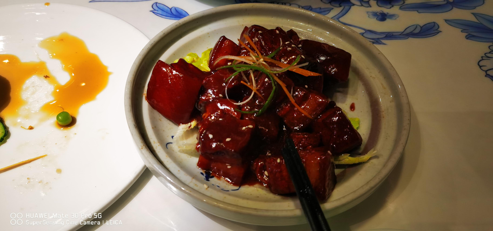
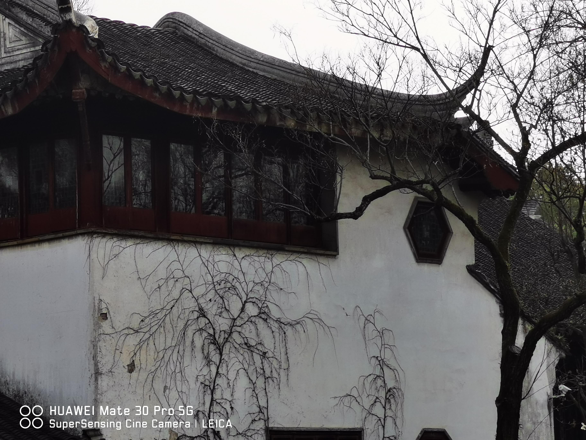
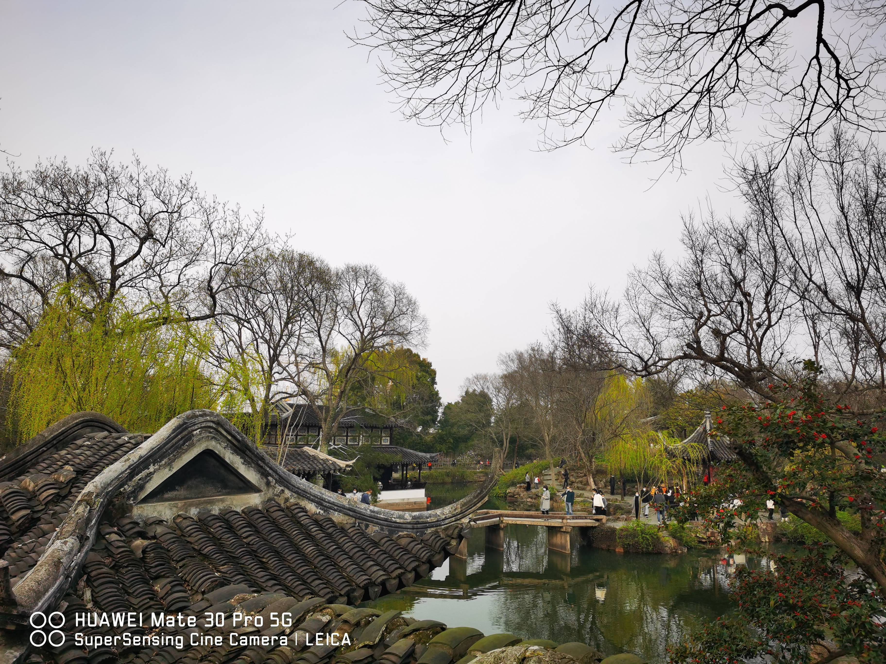
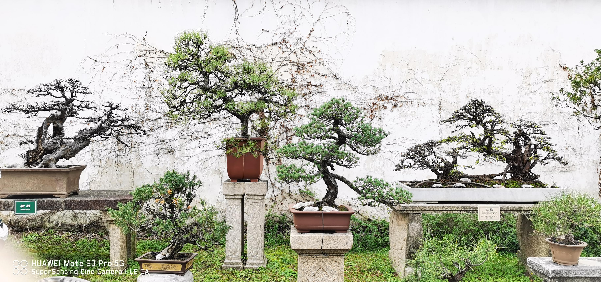
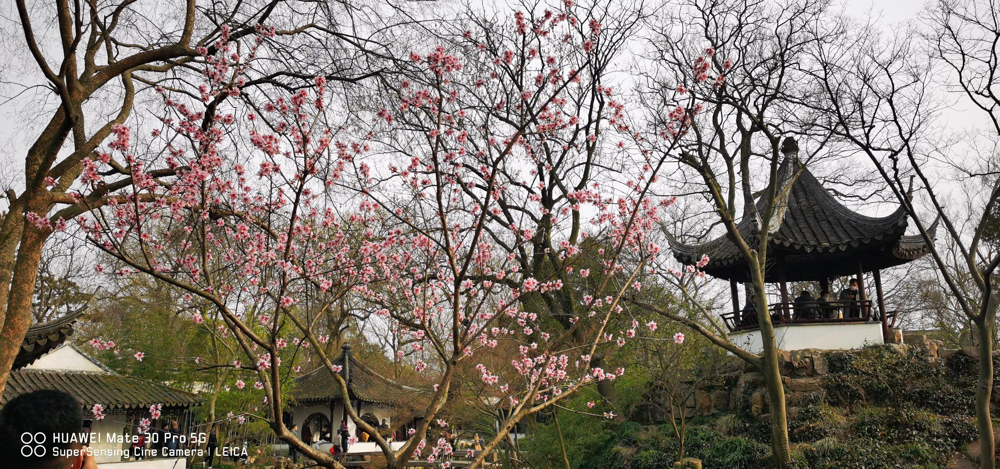
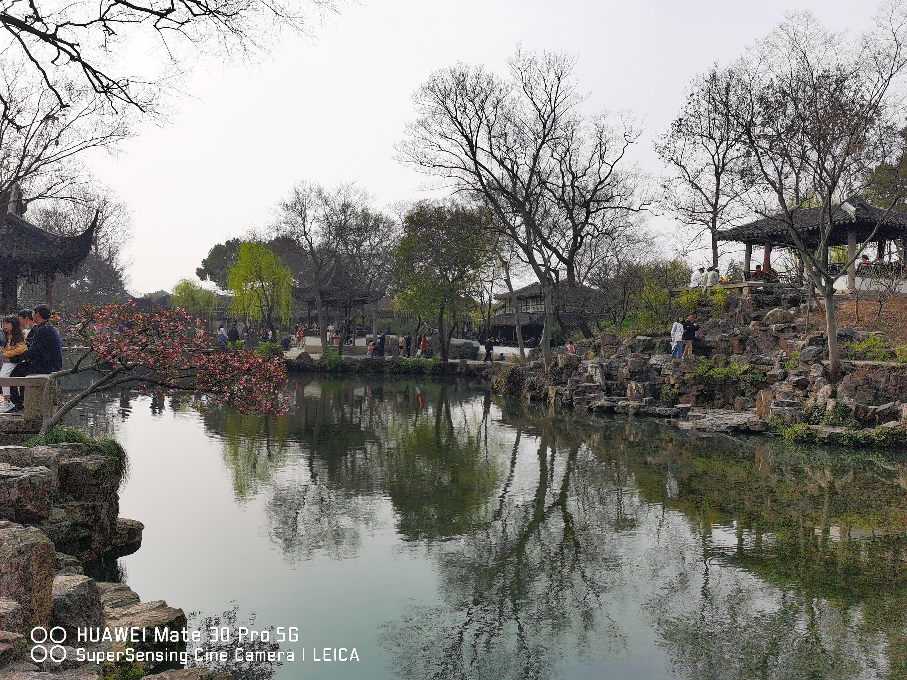
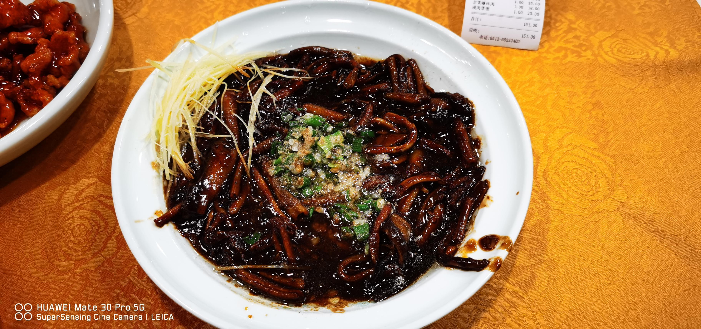
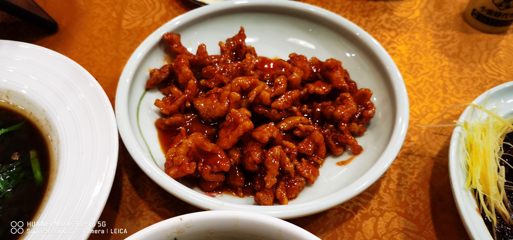
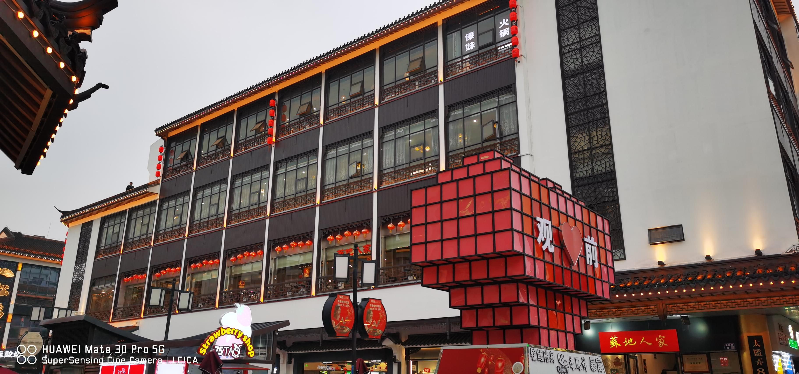
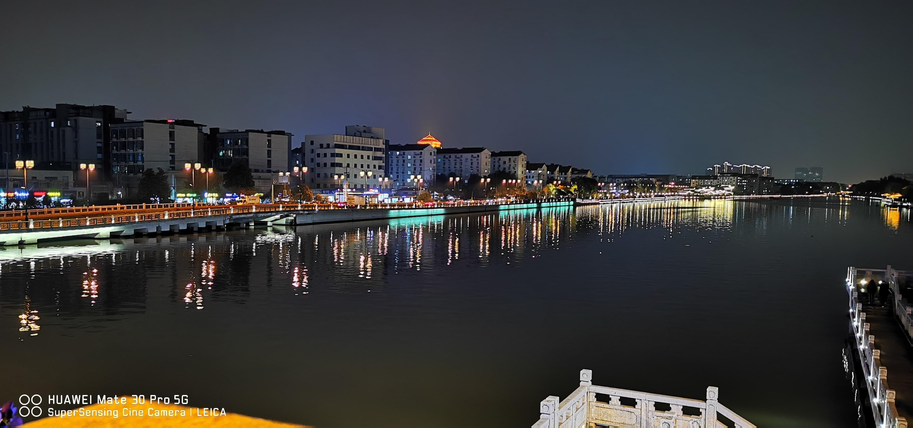

One day and a Half in Suzhou
One Day and a Half in Suzhou
去苏州考了场托福并玩耍了两天

在拙政园的瞎JB拍
托福考完当场给阅读听力成绩是真的刺激
结束之后走了好远去拙政园逛，感觉和前年国庆去扬州玩看到的建筑风格差不太多
啊 我可真是不会拍照





第二顿也是在苏州的最后一顿饭
味道并不很令人满意


总结
两天在苏州的行程方圆不超过3公里，苏州大学的地理位置太好了。校门正对旅游区，建筑很江南，古城墙也很江南。还在大兴土木，但是车道好窄，堵得很厉害，苏州也禁止共享单车，景点走来走去好累的。总的来说挺好的，不虚此行。


啊，hexo的markdown语法实在搞不懂，但是hexo的主题是真的香，就先这样了。并排图片的在notion上
notion webpage